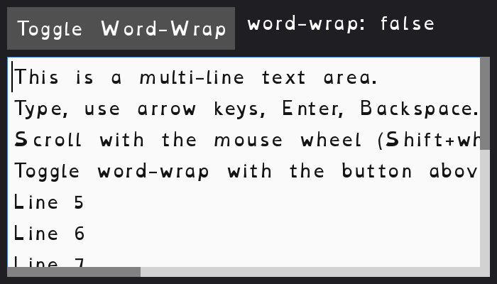

← Back to catalog
Text Playground

A scrollable, multi-line text box. Type into it, scroll with the mouse
wheel or by dragging the scrollbar handles, and toggle word-wrap on/off
with the button at the top.
Controls
- Type normally to enter text
- Arrow keys, Home, End: move the cursor
- Backspace: delete
- Mouse wheel, or click-and-drag the scrollbar handles: scroll (vertical
and, when word-wrap is off, horizontal)
- "Toggle Word-Wrap" button: switch between horizontal scrolling and
wrapping long lines
- Escape: quit
Run it
- Go installed:
go run ./cmd/text-playground (from the repo root)
- Windows, no Go needed: double-click
exe/text-playground-start-exe.cmd